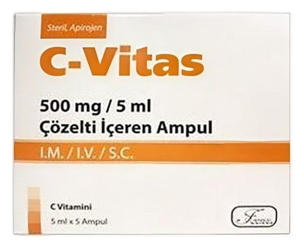

C-Vitas 500 mg/ 5 ml Çözelti İçeren Ampül, 5 Adet

Ne için kullanılır
KT · Bölüm 1Her 5 mL’lik ampul 500 mg C vitamini içerir. C-VİTAS, 5 mL'lik şeffaf cam ampuller içerisinde, her kutuda 5 adet ampul içeren ambalajlarda sunulur. C-VİTAS; Ciddi C vitamini (Askorbik asit) eksikliğinde, Ağız yoluyla kullanımının yetersiz olduğu, mümkün olmadığı veya kullanılmaması gerektiği durumlarda C vitamini eksikliğinin giderilmesi veya önlenmesinde kullanılır.